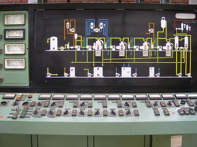

INGENIERIAS Y LICENCIATURAS(informacion)
Desarrollado por:
La Mecatrónica comprende la integración, coordinación y puesta en marcha de sistemas electrónicos, mecánicos e informáticos, no se puede concebir el futuro de la industria sin la intervención de la misma, ya que existe una tendencia hacia sistemas robotizados de producción.
El egresado de la Licenciatura en Ingeniería Mecatrónica contará con los siguientes conocimientos, habilidades, actitudes y valores: Conocimiento de Ciencias básicas, Mecánica, Electrónica y Computación para el desarrollo de la Mecatrónica. En administración: análisis, desarrollo, integración, operación y evaluación de proyectos tecnológicos y/o de investigación, de acuerdo con normas pertinentes. Habilidades para la comunicación asertiva y la negociación interpersonal, comprensión de textos y comunicación en una lengua extranjera. Asesorar proyectos que involucren sistemas mecatrónicos, servicios y/o procesos industriales. Asimilar, gestar, adaptar, aplicar y desarrollar proyectos, productos, tecnología o investigación. Desarrollar y aplicar técnicas, métodos y procesos para el análisis/síntesis de problemas.
El Ingeniero en Mecatrónica podrá integrarse en la industria local, estatal, nacional e internacional, en actividades que van desde la automatización de procesos en microempresas hasta la completa automatización y control de líneas de producción en grandes empresas, desde el diseño de productos sencillos de uso cotidiano hasta el diseño de sofisticados equipos con tecnología de punta, buscando soluciones creativas, con innovación tecnológica y mejora continua de un producto o proceso.
Un Ingeniero en Mecatrónica del Tecnológico de Monterrey podrá desempeñarse en cualquier institución o empresa pública y privada, tanto a nivel nacional como internacional, que provea o utilice sistemas automatizados de producción. Además, podrá trabajar de manera independiente como consultor, o emprender su propio negocio, desarrollando nuevos productos y sistemas mecatrónicos, e integrando tecnologías de vanguardia.
La Ingeniería Química es la profesión en la cual el conocimiento de la Química, Matemáticas, Física y otras ciencias básicas se aplican directamente a procesos industriales para convertir materias primas, sustancias, compuestos u otros elementos en productos útiles, aprovechables o de mayor valor para el beneficio directo de la Humanidad.
MISIÓN:Formar ingenieros quimicos con una solida preparacion cientifico-tecnologica y una conciencia social que les permite contribuir al desarrollo sustentable y a incrementar la calidad de vida del ser humano. VISIÓN:Ser el mejor progarma de ingenieria Química de Latinoamerica, gozar de un gran prestigio a nivel mundial, estar acreditado, por la alta calidad cientifica, tecnologica y humana de sus egresados , quienes ejercen un gran impacto en su entorno laboral y caracterizarse por una interaccion dinamica con el sector industrial.

El Conservatorio de Música del Estado de Puebla es una Institución dependiente la Secretaría de Educación Pública del Gobierno del Estad de Puebla, encargada de formar profesionales en la Música. Fundado en 1917, es en nuestros días la Institución educativa musical con mayor trayectoria en nuestro Estado brindando enseñanza musical inicial, preparatoria y de tipo superior ofreciendo la Licenciatura en Música con catorce especialidades: Piano, Canto, Violín, Violoncelo, Contrabajo, Guitarra, Flauta, Clarinete, Saxofón, Oboe, Trompeta, Trombón, Corno Francés y Percusiones.
3 años
3 años
5 años
Los instrumentos a elegir son: Piano, Canto, Violín, Violoncelo, Contrabajo, Guitarra, Flauta, Clarinete, Saxofón, Oboe, Trompeta, Trombón, Corno Francés y Percusiones
El egresado estará capacitado para leer e interpretar el repertorio musical del estilo académico occidental a un nivel de mediana dificultad, lo que le permitirá poder ejecutar la mayor parte del repertorio de la música popular así como poder aplicar estas habilidades a la enseñanza de la técnica musical a nivel elemental. Tendrá un panorama general básico del desarrollo de la actividad musical desde el punto de vista histórico, técnico y su ubicación en la sociedad; tendrá entrenamiento, en el área técnico-instrumental o de práctica de composición y arreglo de alguna modalidad de la música popular.
El alumno podrá desenvolverse con sus conocimientos a nivel básico en el campo de trabajo siguiente: como integrante de orquestas, grupos de cámara y ensambles, también como instrumentista de grupos de música popular y en actividades de docencia a nivel básico.